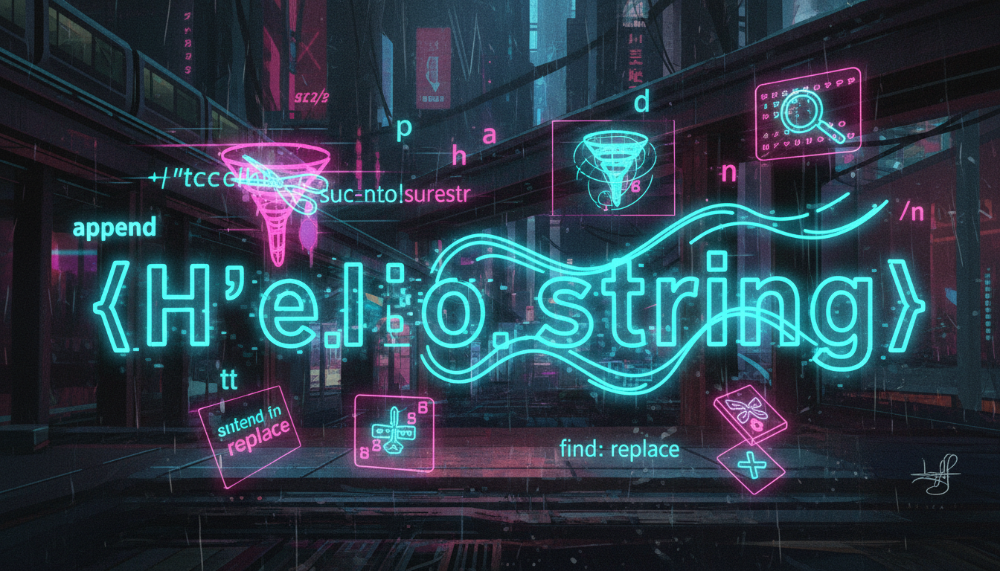

char масиви, std::string, методи рядків, порівняння

C-style рядок — це масив символів, що закінчується нульовим символом '\0'. Це успадкований спосіб роботи з рядками від мови C.
#include <iostream>
#include <cstring>
int main() {
// Оголошення C-style рядка
char str1[] = "Hello"; // Компілятор додає '\0'
char str2[20] = "World";
// Довжина рядка (без '\0')
std::cout << "Довжина: " << strlen(str1) << std::endl;
// Копіювання
char dest[20];
strcpy(dest, str1);
// Конкатенація
strcat(dest, " ");
strcat(dest, str2);
std::cout << dest << std::endl; // Hello World
// Порівняння
if (strcmp(str1, str2) == 0) {
std::cout << "Рядки рівні" << std::endl;
}
return 0;
}std::string — сучасний, безпечний та зручний спосіб роботи з рядками у C++.
#include <iostream>
#include <string>
int main() {
// Створення рядків
std::string s1 = "Hello";
std::string s2("World");
std::string s3 = s1; // Копіювання
// Конкатенація
std::string greeting = s1 + " " + s2;
std::cout << greeting << std::endl;
// Довжина
std::cout << "Довжина: " << greeting.length() << std::endl;
std::cout << "Довжина: " << greeting.size() << std::endl;
// Доступ до символів
std::cout << "Перший символ: " << greeting[0] << std::endl;
std::cout << "Останній: " << greeting.back() << std::endl;
// Підрядок
std::string sub = greeting.substr(0, 5);
std::cout << "Підрядок: " << sub << std::endl;
// Пошук
size_t pos = greeting.find("World");
if (pos != std::string::npos) {
std::cout << "Знайдено на позиції: " << pos << std::endl;
}
// Вставка та видалення
greeting.insert(5, ", beautiful");
std::cout << greeting << std::endl;
return 0;
}